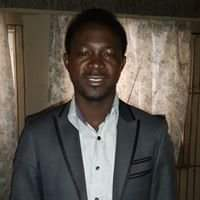

WELCOME TO MY PORTFOLIO PAGE

MUSA SYLVESTER ECHI
MY BIO
Musa Sylvester Echi is an accomplished engineer with a strong academic
background in Engineering. He pursued his studies through to the Master
of Engineering (MEng) level, acquiring advanced knowledge and skills in
his field. With a keen interest in innovative solutions, Musa has
demonstrated a commitment to excellence in both his academic and
professional endeavors. His expertise spans across various engineering
disciplines, positioning him as a valuable asset in solving complex
engineering challenges.
WHAT I AM LEARNING
I am currently learning frontend programming, focusing on key
technologies like HTML, CSS, and popular frameworks such as Tailwind
CSS, Bootstrap, and ReactJS. My journey involves mastering the
fundamentals of HTML and CSS to build well-structured, visually
appealing web pages. To enhance my development speed and create
responsive designs, I am diving into Tailwind CSS and Bootstrap, both of
which offer utility-first and component-based frameworks, respectively.
Additionally, I am exploring ReactJS to build dynamic, interactive user
interfaces, learning how to manage state, handle components, and
structure applications effectively. Through hands-on practice and
real-world projects, I'm continuously refining my skills to create
modern, user-friendly web applications.
MY HOBBIES
In my free time, I enjoy a variety of hobbies that keep me both
entertained and intellectually engaged. Playing games is one of my
favorite pastimes, allowing me to unwind while also sharpening my
strategic thinking. Coding is another passion of mine, where I find joy
in solving problems and building new projects. I also love reading,
whether it's books, articles, or anything that expands my knowledge.
Traveling is something I deeply appreciate, as it gives me the chance to
explore new cultures and environments. I’m always excited about
exploring new things, whether it’s learning a new skill, discovering new
places, or experiencing something out of the ordinary. These activities
help me stay curious and continuously grow as an individual.